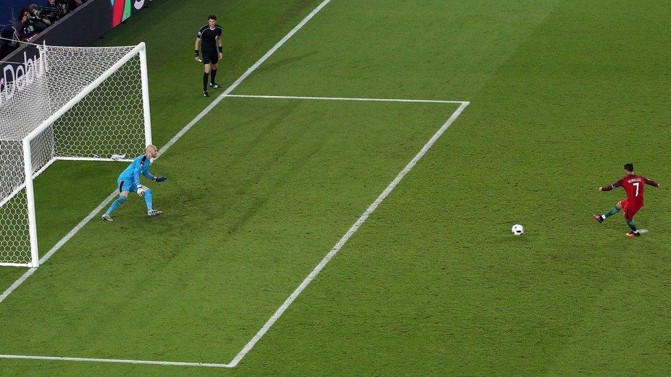

Penalty Dependency & Free-Kick 'Incantation'
Penalty share of goals: By the stats, Ronaldo has converted 175 penalties in his career (missing 33, taking 208), and penalties make up more than a fifth of his total goals. In some seasons the penalty share of his club goals even approached a third — hence the 'Penaldo' nickname.
The free-kick 'incantation' stance: Before taking a free-kick Ronaldo has a signature ritual: legs planted wide, deep breath, hands on hips, eyes locked on goal, as if chanting a spell. Fans dubbed it the 'summoning stance' — ritual cranked to the max, but the results deteriorating.
The free-kick drought: According to The Athletic, Ronaldo once went more than 600 days and 59 attempts without a direct free-kick goal in the league. In major internationals he managed just 1 goal from 61 direct free-kicks — dismal efficiency, the 'incantation' producing nothing.
The superstition of the stance: That wide-base stance is essentially a psychological cue and superstitious ritual. Ronaldo believes it brings luck, but data shows that later in his career his free-kick conversion lagged far behind other takers in his teams, yet he clung to the duties.
The logic of penalty dependence: As open-play ability declined, penalties became Ronaldo's key means of maintaining his goal tally. Monopolising the duties ensures his personal numbers don't drop, but this 'stat-padding' approach is criticised as opportunistic — a pointed contrast with his 'best in history' self-image.
Teammate frustration: Bale complained that he was more accurate on free-kicks in training but never got the call in matches. Benzema, B. Fernandes and other teammates all had solid penalty and free-kick numbers, yet all had to 'give way' to Ronaldo — this resource tilt long poisoned the team's ecology.
Ritual versus reality: When the 'incantation stance' becomes a joke and penalties are the staple, Ronaldo's goal 'quality' is inevitably questioned. A legend sustained by penalty handouts and free-kick 'posing' — his greatness surely merits a giant question mark.